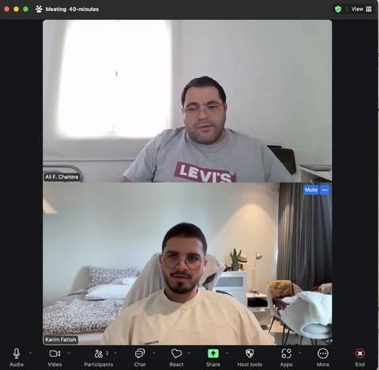

AC & Associates
Clarity, inside and out.
A freelance engagement connecting business development and operations with the way a business presents itself online.
Read the story ↓Where the work began
My work with AC & Associates brought together two areas I had been developing: the practical side of running a business and the way that business communicates. Between February and June 2024, I contributed through a freelance contract covering business-development advice, logistics, operational procedures, and website content.
The scope crossed the boundary between internal work and the customer-facing experience. That connection is what makes the project meaningful to me. How a business explains itself is closely tied to how well it understands and organizes what it does.
Looking at the operational side
I advised on business-development initiatives and supported work on logistics and more streamlined operational procedures. These were practical contributions to how work was organized and moved forward.
This extended the perspective I was building through StratInvest. Instead of looking at communication as an isolated task, I was learning to see it alongside the decisions, coordination, and processes that keep a business moving.
Content as part of the experience
On the website, I worked on strategic content structure and copywriting to support the user experience and the rebranding effort. The contribution went beyond choosing words: structure affects what a visitor encounters first, how ideas relate to one another, and how easily the business can be understood.
I see this as one of the useful overlaps between writing and business development. Writing forces you to decide what matters. Organizing that writing forces you to decide what someone else needs to understand before moving on.
A connection I kept building
AC & Associates is a small but important part of my journey toward work that combines communication with operational thinking. The photograph from my LinkedIn project is a reminder that this work also happens through conversations and working relationships.
The lesson I take from the engagement is to look in both directions: inward at how the business works, and outward at how someone experiences it. I want the two to support each other.
Adapted from my LinkedIn project and experience notes, with personal reflections on the work.
View the original on LinkedIn ↗